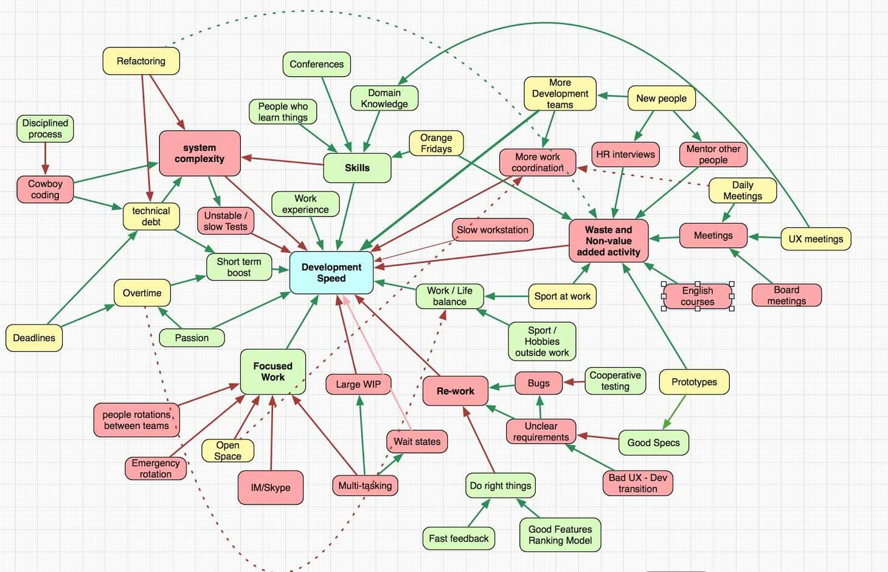

Hello World
CodeTengu Weekly 碼天狗週刊
CodeTengu Weekly 會在 GMT+8 時區的每個禮拜一 AM 10:00 出刊，每期會由三位不同的 curator 負責當期的內容，每個 curator 有各自擅長的領域，如果你在這一期沒有看到自已感興趣的東西，可能下一期就會有了。你也可以瀏覽一下前幾期的內容。
目前的 curator 陣容：
- @vinta - I failed the Turing Test - 科幻迷，最近在讀 The Quantum Thief
- @saiday - Imnotyourson
- @tzangms - Oceanic / 人生海海 - 衝動型購物
- @fukuball - ImFukuball - 有新工作了，但歡迎直接挖角
- @mingderwang - Ethereum enthusiast
- @kako0507 - 熱愛嘗試新事物的前端工程師
- @chiahsien - 徵有經驗的 Objective-C 工程師，快來 Twitter 私訊我
- @hiroshiyui - 歧路亡羊與中年危機的典範
- @uranusjr - Smaller Things - 邊緣人拉到 conference 還是邊緣人
- @kkdai - 態度萬歲 - 總算把 Gopher Day 辦完了..
- @yhsiang
- @johnlinvc - 挑戰自動化家中電器
你也可以關注我們的 Facebook、Twitter、GitHub 或 Open Source 專案，有很多 weekly 看不到的內容。有任何建議或疑問也歡迎來 Gitter 聊聊。
 @tzangms
@tzangms

Speed in Software Development
這一篇真的是不可多得, 作者畫了一張圖, 一開始看到覺得這好亂喔, 不知道怎麼看。 但這篇解釋得非常清楚, 而且是對於任何會影響開發速度的各種角度跟因素, 牽一髮動全身啊。
這篇文章提到的議題很多, 舉例來說: 「技術債」, 常常聽到大家都在講技術債, 但是什麼才算是真正的技術債? 你明確知道這邊留下一個債, 知道之後要來還的, 這才叫技術債。 你沒有特地去借的不叫技術債, 就是寫得爛而已 XD
好啦, 有時候別人的債, 是你要來幫忙還的, 我很懂。
而技術債好不好? 跟借錢一樣, 借了要還, 但你可以借來買車、買房, 但是借來花光光都不還債, 那就破產囉。
這篇應該是我 2017 上半年最推的一篇了, 非常值得一看!!! 但我才發現是 2014 的文章啊 ...
Speed Index Explained – Another Way to Measure Web Performance
很多年前開發網頁有 YSlow 這種東西可以用來測哪邊還有地方可以改善, 但是現在 Web 的發展差異有點大了, 第一次看到 Speed Index 這種東西, 文章中說是 2012 年, WebPageTest 就開始在他們的測試報告裡面提出來了 Speed Index 這個數據, 數字越小越快, 時代變了啊!
CI/CD Tools Comparison: Jenkins, GitLab CI, Buildbot, Drone, and Concourse
CI/CD 這件事在 StreetVoice 最早是用 Jenkins, 後來改用 Travis CI 才真正把這件事弄的很順利, 因為設定簡單。 在還沒開始之前, 先降低門檻這件事真的是很重要, 這篇提到的 Concourse 還滿想試試的, 看起來也是簡單又清爽。 像是 Buildbot 努力過一陣子, 還是直接放生了 :/
其實也是想說 Travis CI 用這麼多年了, 是不是該試試看新的東西了 XD 但話說上禮拜才因為 Travis CI 升級了預設的 Linux Distro, 害我們的 build 突然就炸了, 查了好一會才知道原因, 不可控的因素還是越低越好啊
How to Learn React: A Five-Step Plan
前幾天看到在美國工作的朋友貼了一個徵才訊息, Remote 在家工作, 主要是寫 React-Native, 年收入似乎將近三百萬台幣, 這時候我就覺得為何我不好好的把 React Native 給學一學呢!?
好啦, 機會是給準備好的人, 開始認真學 React 了!!
Faster Pagination in MySQL – Why Order By With Limit and Offset is Slow?
快速分頁, 用 OFFSET, LIMIT 來做分頁, 分頁越後面, 速度就會越慢, 其實一直都知道這個問題, 但是還沒時間認真去研究, 這篇解釋得還滿清楚的。
另外, 來個題外話, 跟分頁相關的還有一個問題, 就是算出總頁數這件事, 這個 SQL query 也是挺慢的, 所以如果可以不給總頁數, 只給下一頁的話, 那頁面又可以快上一倍吧。
例如: 一頁秀出 20 則, 那麼你就 select 21 則, 如果有第 21 則的話, 那就是有下一頁了, 對吧!? :p
 @kkdai
@kkdai
Golang.tw 第 25 次聚會的投影片與錄影
這次主要有四個講者，並且有包括 Python, Evernote, Blogger 架設與 Machine Learning 的講題． 分享給大家..
19:30 ~ 20:10: 王思元 - Evenote API + Blogger API 20:30- 21:10: M157Q - Grumpy
Lightening talk: 21:20: HUGO-靜態網站生成器-2-分鐘上手 (林志傑) 21:20 ~ 21:30 GoLearn
A workshop covering all the tools gophers use in their day to day life 讓你跟著快速學習 Golang 的好 workshop 教材
由 Google 的 傳教士 Francesc Campoy 所準備的 workshop video 跟相關的 source code ． 提供了給初學者跑 workshop 的好素材． 並且讓你能快速了解 Go 的相關工具 (go list, go vet, go list, godoc 甚至 pprof 都有提到)
全程透過 vscode for Go 讓大家更容易上手.
nareix/joy4: Golang audio/video library and streaming server
之前常常有人詢問，是否有不錯用的 Golang audio/video library? 這個看起來很有用，不僅僅支援不少的格式．
還支援 RTMP server/client 與 RTSP client 對於想要用 Golang 做 steaming 的人．應該會覺得棒喔..
tj/gh-polls: Polls for GitHub issues and readmes
gh-polls 可以讓你輕鬆的建立投票 markdown ，並且連接到相關服務可以迅速投票．
只要建立好選項後， markdown 就直接可以使用．並且連接到投票的後端的服務．任何人都可以快速建立投票． 此外，這次之前 Nodejs 大神 TJ Holowaychuk 為了自己公司的產品 apex/up 寫出的小工具．
GopherCon 2017: Kavya Joshi - Understanding Channels - YouTube
[GopherCon 2017 - Understanding Channels]
Channels 大家都了解，但是你真的能了解他如何運作的嗎? 一開始很好奇這個女講者竟然敢在 GopherCon 上面講 Channels ，但是聽了內容意外的深入．
從簡單的 buffer/unbuffered channels 的差異，他們如何運作，甚至到 channels 跟 go scheduler 是如何運作的部分講得相當仔細...
相當建議大家好好閱讀這一篇...
兩篇衍生閱讀: (跟 go scheduler 相關)
GopherCon 2017 所有的影片:
 @johnlinvc
@johnlinvc
Bitcoin 八月一號 Fork 懶人包
Bitcoin 在八月一號即將 Fork, 這個懶人包解釋了什麼是 SegWit 和 SwgWit 2x ，還有 Fork 會對 bitcoin 帶來的影響。
不隨機但是讓人覺得公平的骰子函式庫
程式裡常常需要亂數決定一些事。機率上的隨機性會影響公平性，但是機率上的隨機和人類的認知常常不太符合，最有名的就是賭徒謬誤 。大家會認為完全獨立事件的發生機率會和之前的結果有關。簡單來說就是如果很久沒有骰到六，再來骰到六的機率會變高。 而這個骰子函式庫會讓之前比較少出現的數字機率上升，更棒的是在骰一百萬次的時候每一面的出現機率還滿平均的。 請不要用在任何真的需要公平隨機的地方